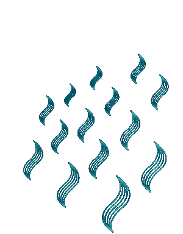
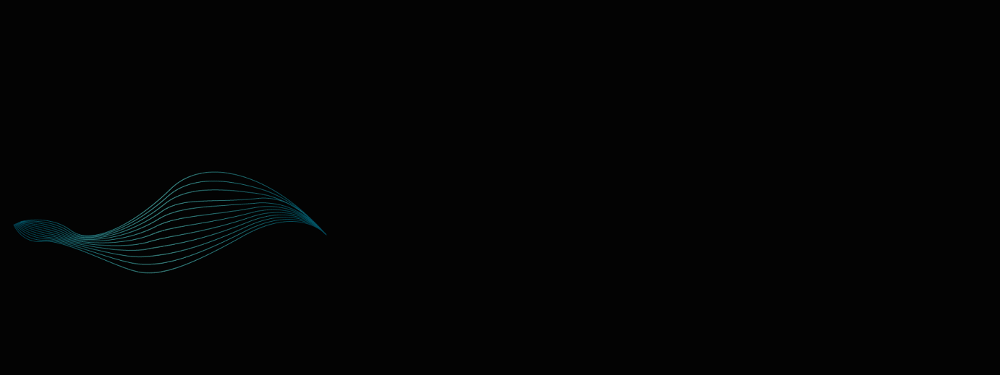

- As asas da minh'alma estão abertas!
- Podes te agasalhar no meu Carinho,
- Abrigar-te de frios no meu Ninho
- Com as tuas asas trêmulas, incertas.


- Tu'alma lembra vastidões desertas
- Onde tudo é gelado e é só espinho.
- Mas na minh'alma encontrarás o Vinho
- e as graças todas do Conforto certas

- Vem! Há em mim o eterno Amor imenso
- Que vai tudo florindo e fecundando
- E sobe aos céus como sagrado incenso
- Eis a minh'alma, as asas palpitando
- Com a saudade de agitado lenço
- o segredo dos longes procurando… 